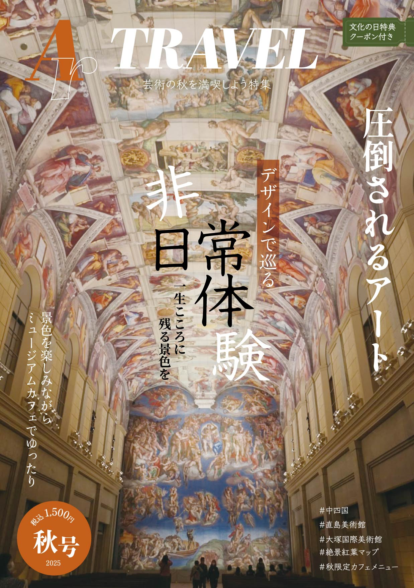

「視線を奪い、保存したくなる体験設計」 圧倒的ビジュアルを主役に据え、文字情報を最小限に抑えることで高級感と没入感を生み出している。 「圧倒されるアート」という感情訴求型キャッチコピーにより読む前から体験価値が伝わり、情報誌ではなく＂体験を所有する商品＂ として認識される。きれいに並んだ要素の中に「非」のみを傾けることによって、そこに視線が運ばれるようにした。表紙とバナーの 視覚的一貫性が記憶を強化し、保存版としての価値を感じさせることで購買につながるのではないかと考える。